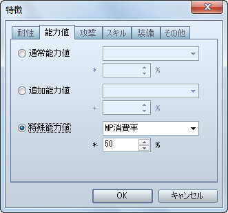
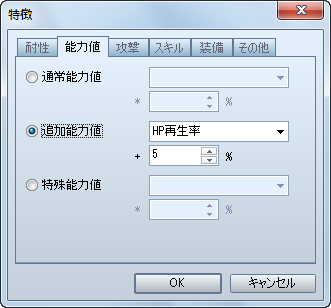
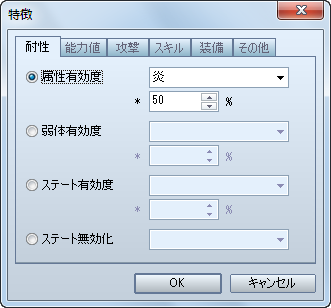

护甲回避率的设置方法。
[护甲]特性 - 能力 - 添加能力 - 物理闪避几率
令护甲拥有防止必杀（在VX中称为[暴击]）能力的设置方法。
[护甲]特性 - 能力 - 添加能力 - 必杀闪避几率

令护甲拥有使用技能时消耗 MP 减半能力的设置方法。
[护甲]特性 - 能力 - 特殊能力 - 魔力值消耗率

令护甲拥有战斗结束时获得经验两倍能力的设置方法。
[护甲]特性 - 能力 - 特殊能力 - 经验获取加成

令护甲拥有在走路时、战斗中 HP 徐徐恢复能力的设置方法。
[护甲]特性 - 能力 - 添加能力 - 体力值再生速度

令护甲拥有对伴随着特定属性的攻击伤害减半能力的设置方法。
[护甲]特性 - 抗性 - 属性有效度

令护甲拥有对特定状态无效化能力的设置方法。
[护甲]特性 - 抗性 - 状态抗性